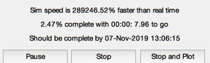
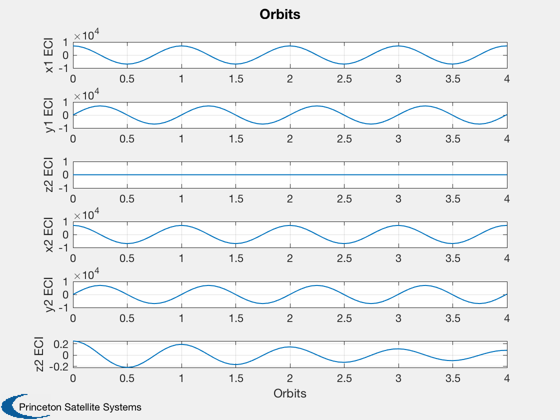
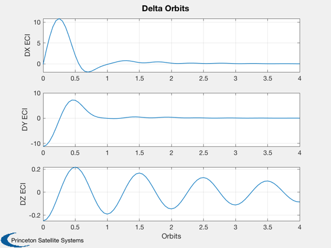
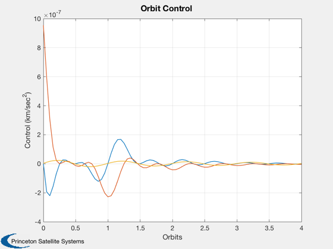
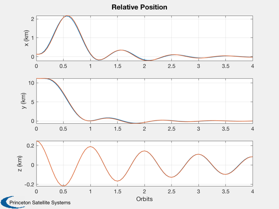
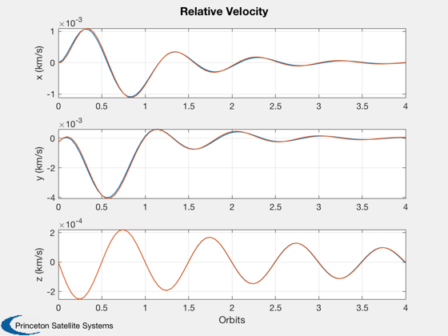

Simulates two orbits and applies a relative controller.
Plots the resulting relative positions. ------------------------------------------------------------------------- See also RelativeOrbitState and LQOrbitController., C2DZOH, QLVLH, QPose, Plot2D, TimeGUI, RK4, JD2000, TOrbit, LinOrb, El2RV, Period, DrawSCPlugIn -------------------------------------------------------------------------
Contents
- Clean up the workspace
- Global for the time GUI
- View 3D graphics? Takes a lot of memory.
- Constants
- Convert to cartesian
- Compute the orbit period and controller period
- Compute the orbit controller
- Initialize the time display
- Initialize the arrays
- Disturbances
- Generate the two orbits using numerical integration
- This is necessary if the simulation is terminated early
- Plotting
%------------------------------------------------------------------------------- % Copyright 1999 Princeton Satellite Systems, Inc. All rights reserved. %-------------------------------------------------------------------------------
Clean up the workspace
%---------------------- clear g x1Plot x2Plot x1 x2
Global for the time GUI
%------------------------ global simulationAction simulationAction = ' ';
View 3D graphics? Takes a lot of memory.
%----------------------------------------
threeDOn = 0;
Constants
%----------
degToRad = pi/180;
r = 7000;
p = Period( r );
n = 2*pi/p;
dT = 50;
nSim = 4*p/dT + 1;
Convert to cartesian
%---------------------
[r1, v1] = El2RV( [7000 0 0 0 0 0] );
[r2, v2] = El2RV( [7000 3.571e-5 -1.57 -1.57 1.7857e-5 3.1416] );
x1 = [r1;v1];
x2 = [r2;v2];
x0 = RelativeOrbitState( x1, x2 );
t = 0;
jD = JD2000;
Compute the orbit period and controller period
%-----------------------------------------------
dT = p/20;
nSim = ceil(4*p/dT) + 1;
Compute the orbit controller
%----------------------------- kOrbitControl = LQOrbitController( x1, [], [], dT ); % 3D %--- if( threeDOn ) g(1) = load('CubeSat.mat'); g(2) = g(1); g(1).name = 'CubeSat #1'; g(2).name = 'CubeSat #2'; g(1).body(1).bHinge.q = QPose( QLVLH( x1(1:3), x1(4:6) ) ); g(2).body(1).bHinge.q = QPose( QLVLH( x2(1:3), x2(4:6) ) ); g(1).rECI = r1; g(1).qLVLH = g(1).body(1).bHinge.q; g(2).rECI = r2; g(2).qLVLH = g(2).body(1).bHinge.q; tag3DWindow = DrawSCPlugIn( 'initialize', g, [], [], 'Earth', jD ); end
Initialize the time display
%---------------------------- tToGoMem.lastJD = 0; tToGoMem.lastStepsDone = 0; tToGoMem.kAve = 0; [ ratioRealTime, tToGoMem ] = TimeGUI( nSim, 0, tToGoMem, 0, dT, 'Relative Orbit Control' );
Initialize the arrays
%----------------------
x1Plot = zeros(6,nSim);
x2Plot = zeros(6,nSim);
x3Plot = zeros(6,nSim);
uPlot = zeros(3,nSim);
dPlot = zeros(6,nSim);
Disturbances
%-------------
a1 = [0;0;0];
a2 = [0;0;0];
n = 2*pi/p;
[a, bD, c, d] = LinOrb( [], n );
b = [0 0;0 0;0 0;0 0;1 0;0 1];
[v, bD] = C2DZOH( a, bD, dT );
[a, b] = C2DZOH( a, b, dT );
xL = x0;
Generate the two orbits using numerical integration
%---------------------------------------------------- for k = 1:nSim % Display the status message %--------------------------- [ ratioRealTime, tToGoMem ] = TimeGUI( nSim, k, tToGoMem, ratioRealTime, dT ); % Control System. The measurements come from the controlling spacecraft % and the target spacecraft. The control vector is in track and out-of % track for the target orbit. %---------------------------------------------------------------------- [d, y, z] = RelativeOrbitState( x1, x2 ); aControl = -kOrbitControl*d; uControl = y*aControl(1) - z*aControl(2); % Plotting %--------- x1Plot(:,k) = x1; x2Plot(:,k) = x2; x3Plot(:,k) = xL; dPlot(:,k) = d; uPlot(:,k) = uControl; % 3D %--- if( threeDOn ) % Transformation matrices %------------------------ g(1).body(1).bHinge.q = QPose( QLVLH( x1(1:3), x1(4:6) ) ); g(2).body(1).bHinge.q = QPose( QLVLH( x2(1:3), x2(4:6) ) ); g(1).rECI = x1(1:3); g(2).rECI = x2(1:3); g(1).qLVLH = QLVLH( x1(1:3), x1(4:6) ); g(2).qLVLH = QLVLH( x2(1:3), x2(4:6) ); DrawSCPlugIn( 'update spacecraft', tag3DWindow, g, jD ); end % Propagate the orbits %--------------------- x1 = RK4( 'FOrb', x1, dT, t, 'car', a1 ); x2 = RK4( 'FOrb', x2, dT, t, 'car', a2 + uControl ); xL = a*xL - b*kOrbitControl*xL; % Update the time %---------------- t = t + dT; jD = jD + dT/86400; % Time control %------------- switch simulationAction case 'pause' pause simulationAction = ' '; case 'stop' return; case 'plot' break; end end
This is necessary if the simulation is terminated early
%----------------------------------------------------------
j = 1:k;
tOrbit = (0:(k-1))*dT/p;
Plotting
%--------- xLbl = 'Orbits'; yLbl = ['x1 ECI';'y1 ECI';'z2 ECI';... 'x2 ECI';'y2 ECI';'z2 ECI']; yLbl2 = ['DX ECI';'DY ECI';'DZ ECI']; Plot2D( tOrbit, [x1Plot(1:3,j);x2Plot(1:3,j)], xLbl, yLbl, 'Orbits' ) Plot2D( tOrbit, [x1Plot(1:3,j)-x2Plot(1:3,j)], xLbl, yLbl2, 'Delta Orbits' ) Plot2D( tOrbit, uPlot(:,j), xLbl, 'Control (km/sec^2)', 'Orbit Control' ) Plot2D( tOrbit, [dPlot(1:3,j);x3Plot(1:3,j)], xLbl, ['x (km)';'y (km)';'z (km)' ],... 'Relative Position', 'lin', ['[1 4]';'[2 5]';'[3 6]'] ) Plot2D( tOrbit, [dPlot(4:6,j);x3Plot(4:6,j)], xLbl, ['x (km/s)';'y (km/s)';'z (km/s)'],... 'Relative Velocity', 'lin', ['[1 4]';'[2 5]';'[3 6]'] ) %--------------------------------------    